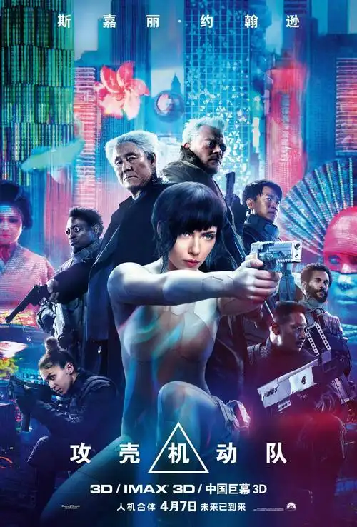

攻壳机动队
攻壳机动队
的叙事结构和情感节奏处理成熟。影片通过细腻的人物刻画和有机的剧情推进，让观众在观看过程中不断重新评估角色的动机与选择。导演在镜头、光线与配乐之间找到恰当的平衡，使每一个镜头既服务于剧情，也增强主题表达。
表演上，演员们提供了令人信服的演绎，尤其是在关键情感节点的处理上，他们的微妙表情与肢体语言为剧情注入真实感。配角的存在并非陪衬，而是推动主线与扩展主题的必要元素。
影片的主题具有普遍性——关于爱、救赎、选择或时间与记忆等方面的思考，这使它超越了单纯的类型化叙事，成为一部可以反复讨论与解读的作品。导演在细节处的雕琢，常常在观影后的回味中显现其巧思。
技术方面，摄影与剪辑的处理精巧，配乐与音效的铺排恰到好处，既不会喧宾夺主，也能在情绪上起到放大作用。整体制作质量显示出制作团队对影像语言与叙事节奏的高度掌控。
总的来说，攻壳机动队 是一部兼备思想性与观赏性的作品，它既能满足寻求情感共鸣的观众，也为喜欢从结构与主题层面切入的观影者提供丰富的解读空间。
表演上，演员们提供了令人信服的演绎，尤其是在关键情感节点的处理上，他们的微妙表情与肢体语言为剧情注入真实感。配角的存在并非陪衬，而是推动主线与扩展主题的必要元素。
影片的主题具有普遍性——关于爱、救赎、选择或时间与记忆等方面的思考，这使它超越了单纯的类型化叙事，成为一部可以反复讨论与解读的作品。导演在细节处的雕琢，常常在观影后的回味中显现其巧思。
技术方面，摄影与剪辑的处理精巧，配乐与音效的铺排恰到好处，既不会喧宾夺主，也能在情绪上起到放大作用。整体制作质量显示出制作团队对影像语言与叙事节奏的高度掌控。
总的来说，攻壳机动队 是一部兼备思想性与观赏性的作品，它既能满足寻求情感共鸣的观众，也为喜欢从结构与主题层面切入的观影者提供丰富的解读空间。
观影亮点解析
导演手法
导演在本片中利用节制的镜头语言与象征性的场景构造，强化主题表达。
表演
主演的表演层次分明，细节处理使得角色更立体。
视听美学
摄影、配乐与美术配合默契，营造出沉浸式的观影体验。